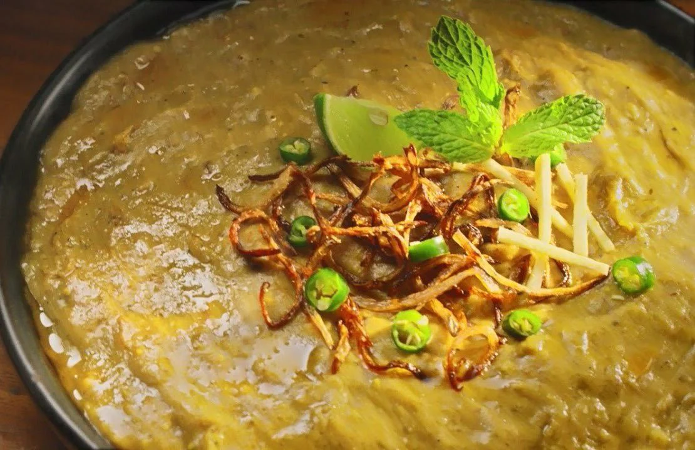

Nihari
Haleem is a savory, rich, and hearty dish popular in South Asia, particularly in Pakistan, made with a mixture of wheat,
barley, lentils, and meat (usually chicken, beef, or mutton). It's slow-cooked to create a smooth, thick consistency, and
is flavored with a blend of aromatic spices such as ginger, garlic, cumin, coriander, and garam masala. Haleem is a
comforting dish, often enjoyed during Ramadan for iftar or as a festive meal. Topped with fried onions, fresh coriander,
and a squeeze of lemon, Haleem is typically served with naan, paratha, or rice for a fulfilling meal.
prep time
15-20 min.
cook time
2-3 hr
serving
4-6 servings
Tags : Beef
instructions
Blend: Once cooked, blend the mixture into a smooth paste.
Spice it Up: In a separate pan, sauté ginger, garlic, and spices in oil or ghee. Add the blended mixture and cook on low heat until thickened.
Garnish: Garnish with fried onions, coriander, and a squeeze of lemon.
Serve: Enjoy with naan, paratha, or rice.
ingredients
- Meat (chicken, beef, or mutton).
- Wheat, barley, and lentils.
- Ginger, garlic.
- Spices: Cumin, coriander, garam masala, turmeric, red chili powder.
- Fried onions, fresh coriander, lemon (for garnish).
- Cooking oil or ghee.